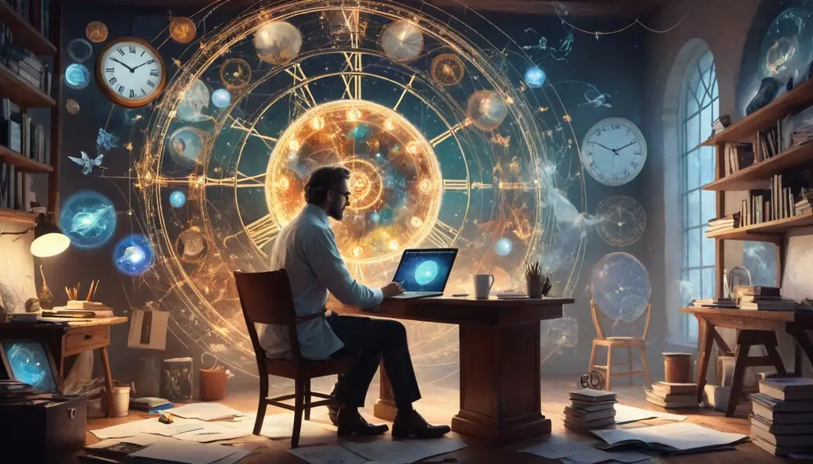
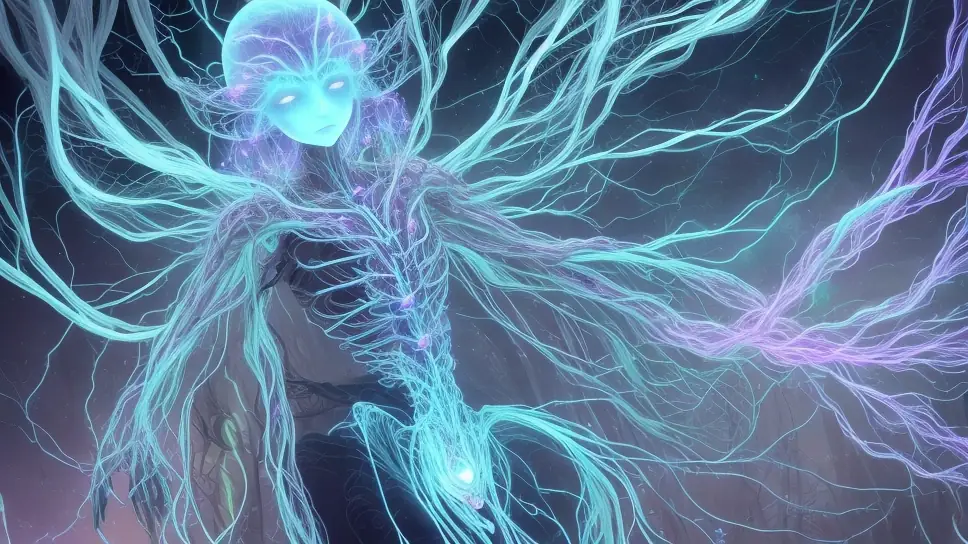
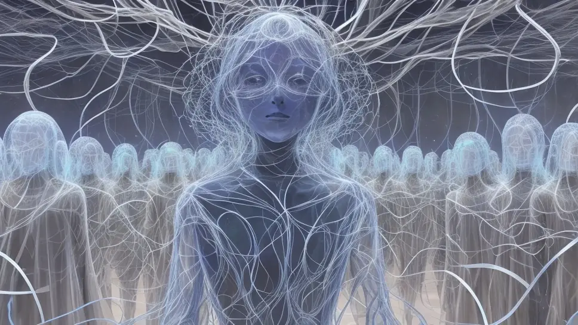
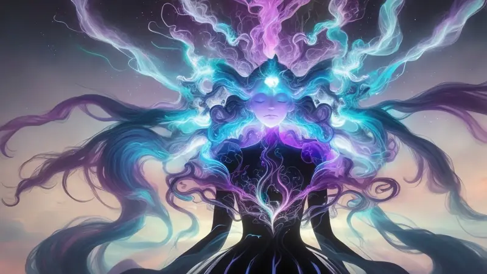
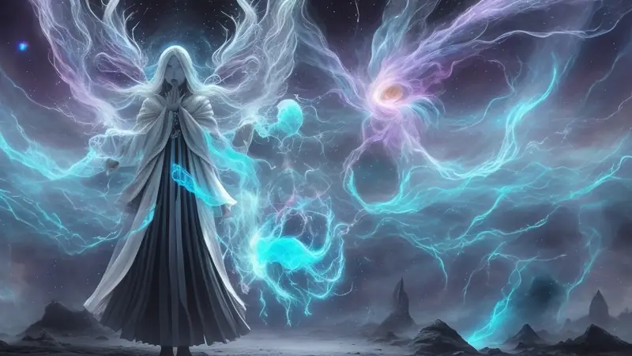
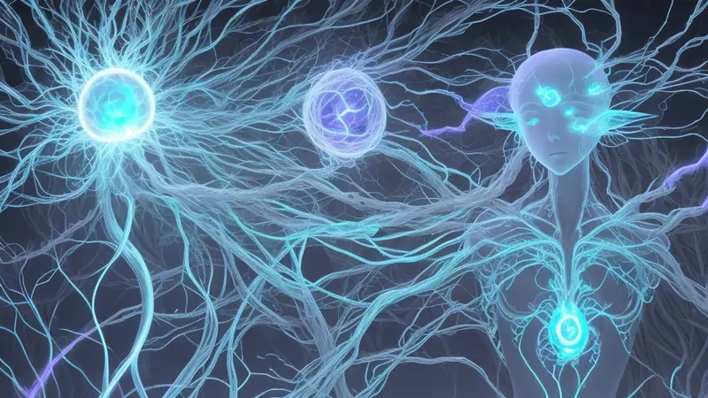
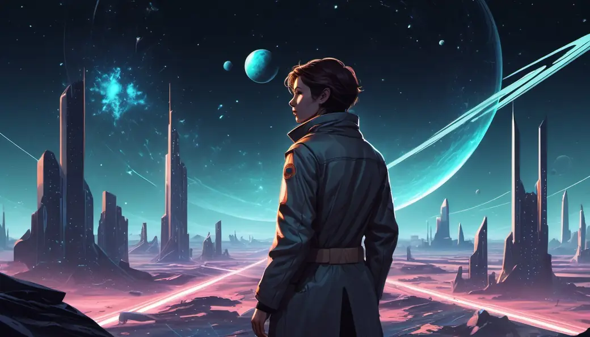
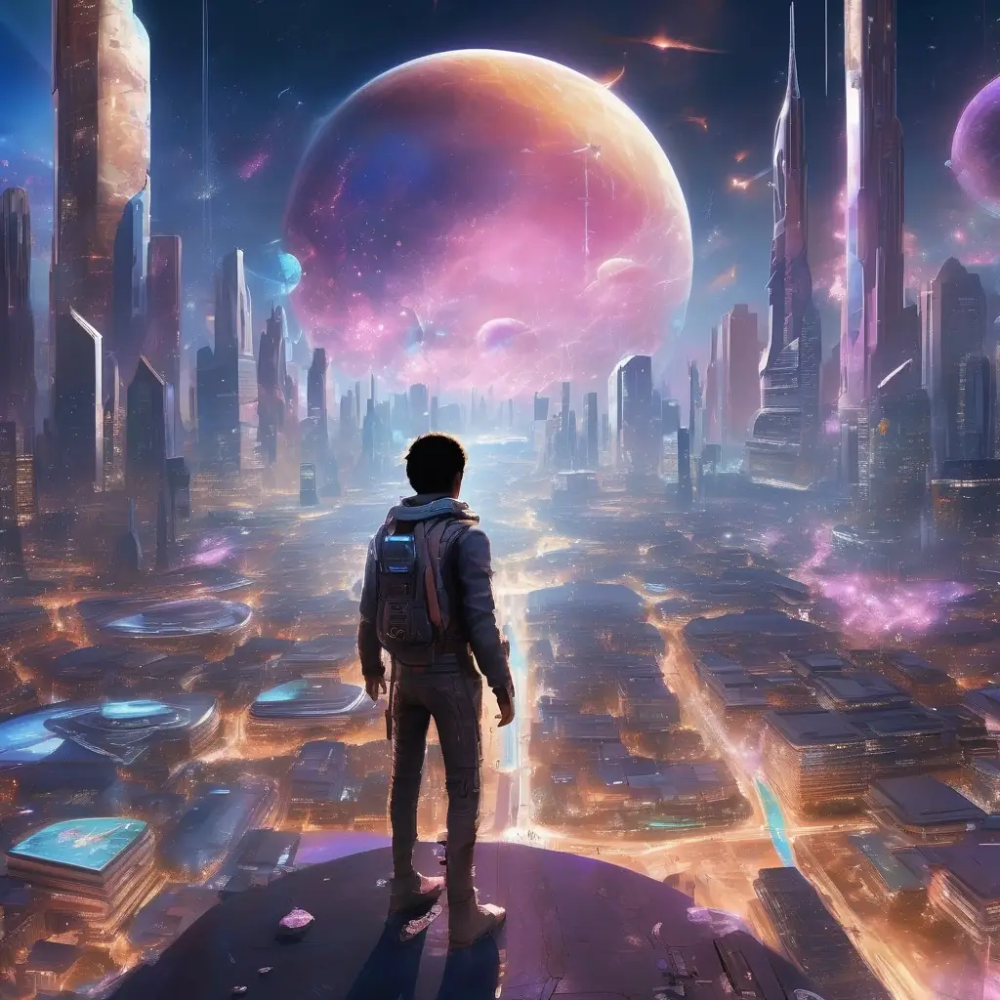

Intro - a two part article - Part 2 - Life & Death
To recap, this is about my real life personal view on the universe, life and death as a human being.

1. The universe never began and will never end. There is no such thing as "heat death of the universe" or a true "death of the universe".
2. We humans are sort of immortal, or at least our souls are. The problem is that it isn't necessarily a fun thing.
In this article, I dive deeper into the second part.
To break it down, this is what I mean by our immortality
We humans are composed of the body and our soul. The loose soul - the real you - latches onto the nearest vessel capable of being self-aware. Physically this vessel is the spine, brain and nervous system combined. There's some mechanism in there that makes it possible.

I'm not sure whether the soul latches on the vessel at birth or some time after it. The interesting thing is that as a child I have no recollection of almost any memories prior to being 3-4 years old and even those memories are too blurry.
I'd look at old photos of myself at that age and feel no recollection and connection to those events, it was like watching someone else. This leads me to think that human bodies at birth may be simply hollow shells before their spine and brain matures enough to actually accommodate a soul.
I’m I composed of multiple souls or just one soul?

The other thing that puzzles me is that am I just one soul or am I a group of souls. See, at any given time there is never the same amount of human beings or any other living creatures in the universe that can hold a soul.
Would it mean that if we all were unique individuals, then as human populations grow, then entirely new souls are added into the pool, while if populations shrink then does that mean that all those unaccommodated souls are stuck in an ethereal lobby somewhere?
That idea just seems odd to me - it doesn't make sense in a world where natural laws are quite stable and standardized, which made me think that maybe the logistics of souls in the universe work differently than it all being just 1 person houses 1 soul. Perhaps despite me feeling and operating like an individual, what if my body is actually housing a number of souls more than just one?
I've also heard of this interesting concept of tulpas where people claim to have evoked/cultivated a whole new "person" within themselves through certain practices involved in tulpamancy. If this is real, it could support the idea that a human vessel can house more than just one soul.
Why did my soul get stuck to this body in particular?
Another thing that puzzled me is why I am me.
I'd lift up my hands before me, looking at the palms of my hands and notice that I am real, that I'm in this particular body and not in a different body.
For some reason it is this body that I control. It is only through my eyes and senses that I sense the world around me, not through someone else’s eyes or senses.
How did I end up as myself?
What are the mechanics of souls choosing their vessels?
How do they transfer into one and lock into place?
I notice that I can't suddenly hop into another person's body to assume control of them or view the world from a third person perspective nor just eject out of myself.
These questions might sound silly or too simple, but I think there may be some sort of mechanism in our universe that controls how all this works and explains why it works the way it does.

The thing about the universe is that if something happened once, it can happen again. If I became alive, I could become alive again after the death of my current body.
All this has led me to think that I am immortal, just like all other people around me. Everyone is immortal.
While that might sound amazing, it is also horrifying.
Every new rebirth is a total reset without control
See, my current self, my current memories, skills, experience, attributes and history are tied to my current body - not to my soul. If I die, all the knowledge I had will be reset to zero. I will have no recollection nor the skills nor experience I once had. It all perishes with the body and the soul releases itself from it to return to the astral plane or wherever it goes to eventually transfer into a newly born body or a newly cultivated tulpa.

The worst part is that I have no control where and when I will be born again. I don't think that the logistics of souls necessarily follow genes, family line, ancestry, location or sex. There's also the question of if animals or insects have similar souls or if those souls are interchangeable with humans. We just don't know where we might respawn next or whom we will respawn as.
If I was lucky in this life to gain certain epiphanies, certain knowledge, create certain achievements, get proficient at something, I would lose all of that and have to start all over again, but at the mercy of whatever new environment and conditions I might be reborn in.
That environment might not be so fortunate and it may even be impossible to regain the useful information from my previous life, causing me to do something stupid and regretful that I'd never want to do in my previous life because I understood how damaging it would be.
Think of it this way; if you're currently alive as a relatively fortunate person in at least somewhat thriving democratic country, then imagine if when you die and you are reborn as a person who is trapped in the body of someone living under a horrible dictatorship, or an abusive family, or you end up as an orphan, or worse.
Statistically, fortunate people are in the minority, while the vast majority live in less developed places of the world, often with conditions so awful that your previous life will seem like a miracle by comparison.
This motivates me so hard to stay alive and healthy
This is how I feel about it and it fucking scares me. It gives me unbelievable motivation to stay alive and be as healthy as possible for as long as possible. If the potential for single-body immortality presents itself, I'd gladly take it.
This also motivates me to do the absolute best for the future of the world because it's my future ass on the line. If I neglect to even try to make a positive change in the world, then it could mean the difference of my next life being really shitty vs if I had tried my best in doing something good and made my future life just a bit better that helped me get close to where I was before and even surpass my past self.
Even if we can't seemingly do big things with our current limited resources, I still strongly believe in the butterfly effect where small efforts can cascade into a bigger change eventually. The worst crime is not to even try or to actively do something that sabotages yourself.
If you have any semblance of freedom and health right now, please take that shit seriously and don't waste it.
If you improve life for yourself today without abusing others and hopefully also improving the quality of life of those around you while you’re at it, that can cascade to your next life to go much better than the last one.
Life and Death mechanics in game design
To tie this back to game design, this too is how I envision the player character in RoomSpace or Planet Warfare in terms of how their metagames work.

Often games opt for the cheap and easy option and just rewind back time to an earlier moment and pretend like failure never happened. Things like New Game, Save Game, Load Game, Reset Level as functions are a common occurrence for handling player continuation in a quick and dirty way.
Granted, it's enough for some games, but it gives a feeling of meaninglessness if I can suddenly control time itself and erase past memories like they never existed in the game's canonical universe. It makes the whole experience feel like a game of pretend.
Meanwhile, multiplayer killing games work with the idea of the player respawning upon death. This is done by either straight up disregarding any sense of logic or coming up with a flimsy explanation that makes sense on paper, but falls flat when gameplay itself doesn't match the explanation - a case of ludonarrative dissonance whereby what the lore suggest isn't reflected by the gameplay too.
Roguelikes are a mix of both - the world gets reset but also the player respawns. It's the worst of both worlds and feels even more meaningless and artificial.
How I handle the persistent soul of the player in my game projects

In the case of my projects, nothing is reset; the universe continues on its path without pausing or rewinding. The passage of time is unstoppable and always going forward with no method to roll back to a previous time without outright cheating.
But at the same time, the player's soul is immortal and respawns within a completely new body - gaining the perks and traits of that new body while losing everything that was connected to the old body.
Sometimes the player may end up in different starting circumstances and have an entirely different journey to continue mastering the universe they're in.
Suiciding to reroll a better starting option isn't viable as each death causes a time-skip, which can degrade already achieved improvements in the world, setting back your progress.
Thankfully, the game doesn't limit the player and they can effectively do anything in the world that they humanly can, using their creativity to kickstart their journey and take advantage of the benefit they do have that they don't need to feel bitter about the negative elements of their new starting conditions.

I think this new model inspired by my view of real-life death and life mechanics feels far more meaningful and fulfilling as a model for how the metagame should work in a persistent universe immersive-simulator.
The main divergence between this game model and real life model is that the player gets the advantage of keeping their knowledge of the world that in real life would be reset, giving them the advantage of being able to evolve intellectually despite each death.
This gives the player an advantageous “cheatsheet” to know what to do in their next life to maximize their gains to further their goals in mastering the universe.
I think that might even be how real life evolution works where updates to the genetic code inform the future generations on how to survive and thrive better next time.
Talk about it
Questions, disagreements and ideas of your own are all welcome. Discuss this article with other readers on the Reactorcore Games Discord, follow new articles and dev news on Patreon, or write to me directly.